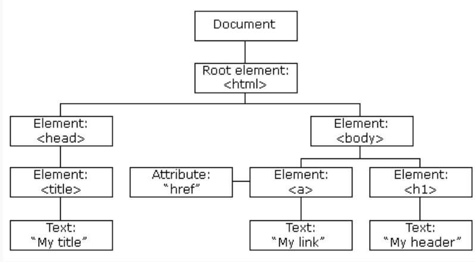

HTML DOM (Document Object Model) 是 W3C 组织推荐的处理网页内容的标准编程接口。 它定义了处理网页内容的方法、属性和事件。 通过 HTML DOM， 可以动态地创建、修改、删除 HTML 元素， 也可以操纵 CSS 样式和 JavaScript 事件。
HTML DOM 树是 HTML 文档的对象表示，它由节点（node）组成。 每个节点都代表文档中的一个元素、属性、文本或注释。 节点之间的关系通过树结构来表示。
1、JavaScript 能够改变页面中的所有 HTML 元素
2、JavaScript 能够改变页面中的所有 HTML 属性
3、JavaScript 能够改变页面中的所有 CSS 样式
4、JavaScript 能够对页面中的所有事件做出反应